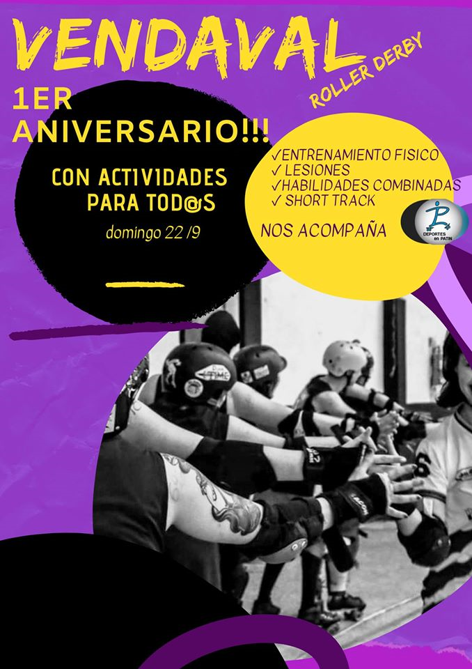
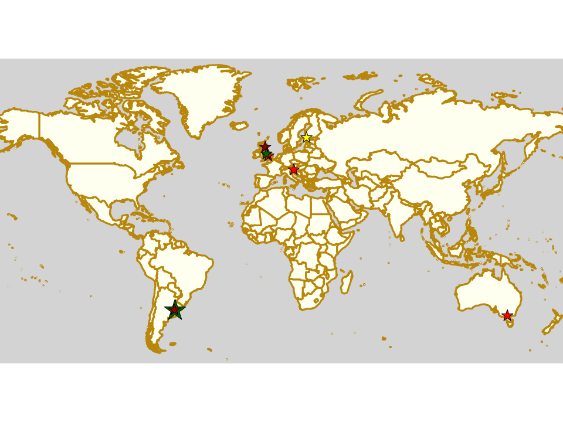
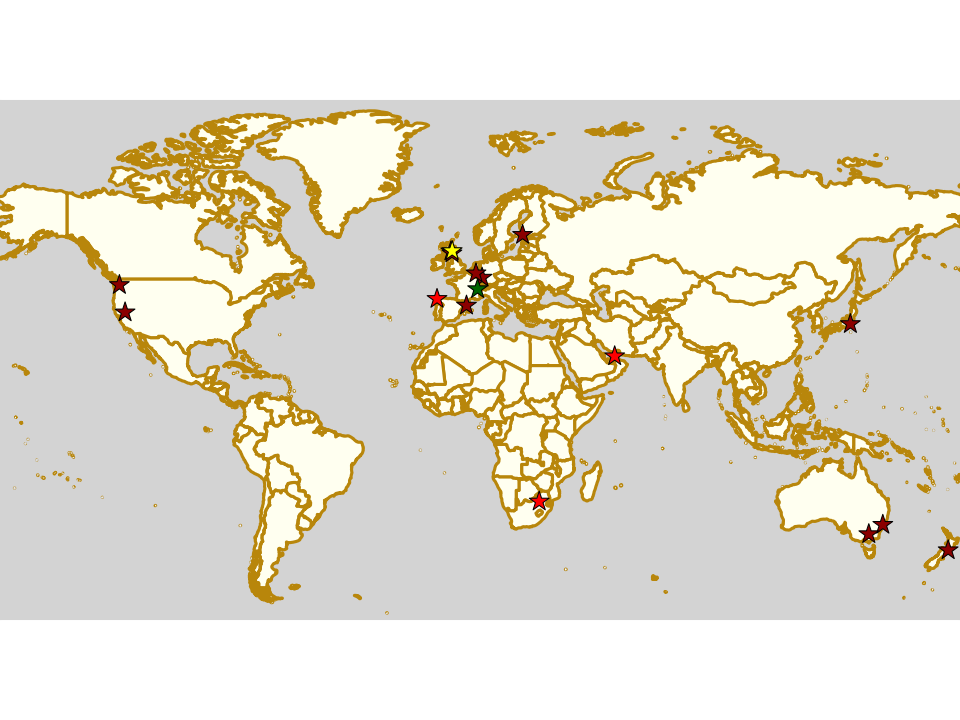
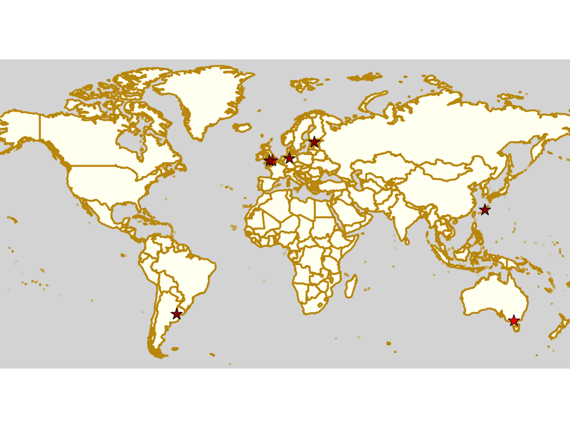

We Want To Help Give You A Voice
We have another article tantalisingly close to publication, but whilst we wait for the final sign-offs, we'd like to take the time to remind everyone that we're open to article pitches from any person in roller derby, anywhere in the world, in any language (or languages). If you have something you want to say about Roller Derby, then we're happy to work with you to say it - as we have, for example, with Vendaval Roller Derby just this week. Vendaval contacted us to work on this article, and we thought that it was important enough to share.
In the next few weeks, we're hoping to have a few more guest articles - written entirely by others - as well some features and catchups on more exciting events across the world, returning to some of the national tournaments we covered last year, and some new events for this year.
But we're always open for more articles: we'd like to help amplify the voices of the entire roller derby community, regardless of the language they speak, the country they're in, or the divisions they play in. So, please, get in touch with us, by Facebook, email, Instagram message; or even WeChat (we can't link to WeChat directly) or WhatsApp. (We're thinking about a VK account, but don't have one yet.)
Vendaval Roller Derby's Birthday: Short Track Roller Derby arrives in Latin America
We don't normally allocate a whole article to signifying the anniversary of a league, but this one is a bit special for other reasons.
Vendaval Roller Derby are one of the newer teams hailing from the Argentinian part of Patagonia, in their case, Comodoro Rivadavia. In fact, the 22nd of September will mark only their first year of existence... and for most leagues, that first year doesn't have much in it but building up. Vendaval have certainly been doing that, and they want to spend their anniversary helping do the same for the rest of the Patagonian community.
In fact, that community has been working together as a closely-allied group, transcending team boundaries for some time now. Indeed, despite the challenges of the region, Patagonia has hosted the southern-most roller derby tournament for several years running now.
As such, this first anniversary is also a center for more developments in this area: the anniversary event is somewhere between a bootcamp and a convocation for Patagonian leagues. As well as theoretical sessions on dealing with injuries and proper exercise, run by coaching service LP Deportes en Patín, there will also be physical training sessions, and a large shared lunch designed to encourage sharing and connection between the attendees.
Collaboration is essential, but holding games also needs infrastructure and resources. Vendaval will be hosting the first ever public exploration of Short Track Roller Derby in Argentina in aid of this.
As we've written about before, Short Track Roller Derby is a version of the sport created by Rolla Skate Club to enable derby to be played with less space, time, resources and officials than the more established versions do. As such, it's an excellent additional tool to help Roller Derby develop and progress in regions, like Patagonia, where recruitment may be harder, and finding suitable spaces for a full-size WFTDA-standard track impossible.
Vendaval Roller Derby's birthday event will start at 9am on 22nd September.
It will be hosted at: Club In. Luis A. Huergo, Av. del Libertador 450, Comodoro Rivadavia, Chubut, Argentina
Weekend Highlights: 15 September 2019 (Sunday)
This is the Sunday addendum of exciting highlights this weekend. We have a double dose of action in Argentina, with Indias Roller Derby of Quilmes, and recently Continental Cup winners, Sailor City Rollers both hosting multi-bout events! There's also excitement in Scotland, as the selection bout for Men's World Cup team, Power of Scotland is on in Dundee... and we have a Tuesday event in Slovenia as Roller Derby Ljuljana screen Whip it! for Pride!
The rules are, as usual: highlights limited to 1 event per country, with an "extra" event allowed for a different kind of fixture (so, 1 tournament and 1 bootcamp), or if they involve Scottish leagues (since we are the Scottish Roller Derby Blog). Other notability might also allow the extra event - great posters, notable teams, etc. (League birthdays may count as "special" enough, at our discretion ;) )
We've bent the rules a bit this time, because it's important to highlight derby in regions which need more attention, and because it's quiet enough that we have the space.
In a bid to make this list as useful as possible, we've avoided links to Facebook except where noted. (Links to Teams are to non-Facebook resources - Instagram, or actual team pages - we'd strongly recommend that Teams get themselves an actual webpage [we can help host one if you need help]).
Locations are roughly organised East-West (with things before the weekend out sequence at the start).
Weekend Highlights: 14 September 2019
This weekend is another busy one, so we're splitting into this (up to Saturday) and the later (Sunday and Monday) update to fit all the good things in. As well as a second WFTDA Playoffs showcasting Sweden, and giving the UK it's second chance at a Champs place, there's equally exciting action in the USA for Brussels Derby Pixies in California; the finals of Victoria's Statewide Stampede tournament in Australia; the start of Finland's Suomi Cup for 2019/2020... and much more!
The rules are, as usual: highlights limited to 1 event per country, with an "extra" event allowed for a different kind of fixture (so, 1 tournament and 1 bootcamp), or if they involve Scottish leagues (since we are the Scottish Roller Derby Blog). Other notability might also allow the extra event - great posters, notable teams, etc. (League birthdays may count as "special" enough, at our discretion ;) )
We've bent the rules a bit this time, because it's important to highlight derby in regions which need more attention, and because it's quiet enough that we have the space.
In a bid to make this list as useful as possible, we've avoided links to Facebook except where noted. (Links to Teams are to non-Facebook resources - Instagram, or actual team pages - we'd strongly recommend that Teams get themselves an actual webpage [we can help host one if you need help]).
Locations are roughly organised East-West (with things before the weekend out sequence at the start).
Auld Reekie saved by Leith
It's a sad truism about Roller Derby that even the largest and most successful leagues in a country have the constant threat of venue issues. For much of the past year, Edinburgh's Auld Reekie Roller Derby have sad members of that club, despite what should have been one of their strongest and most successful years so far. ARRD have been training hard for the European Continental Cup in Helsinki (and maintaining their ranking to get there in the first place), and ARRD B have been hard at work in British Championships as well.
Auld Reekie Roller Derby [Photo credit: Krzysztof Jaros Photography]
Readers will remember that ARRD lost Meadowbank Sports Centre - their hosting venue for all of their bouts since 2009, as well as one of their core training venues - back in December 2017, due to its closure for redevelopment. This obviously caused significant stress in their scheduling for 2019, including the need to find a new hosting venue capable of supporting their expected attendance. This year's games have been hosted in what's become a common venue for Edinburgh and Midlothian roller derby, Dalkeith Community Campus, which, whilst lovely, is much smaller than the Meadowbank, and considerably less central.
However, this July, this was compounded by the decision, with little notice, by Edinburgh Leisure (the City Council's provider of sport and leisure services) that access to Broughton and Holyrood High, another of their regular training venues, would be terminated. This came as a particular shock to the league, as they had been using the venue for many years with no issues. (Edinburgh Leisure were, and are, also responsible for Meadowbank, and had previously promised to support the league in finding alternative venues, with little actual results on their part.)
Losing such a large fraction of their training space, and schedule, was as traumatic to the league's functioning as you would expect, and it became a matter of existential urgency to find alternative spaces.
Luckily, other providers are more enlightened, and ARRD have been delighted to announce that Leith Community Centre will be their new regular training venue from this month; joining their remaining loyal and regular venue of many years, the Jack Kane Sports Centre, in supporting Roller Derby in Edinburgh.
In a statement released as part of ARRD's press release on this news, Auld Reekie All-Stars Captain Crazylegs said “We are absolutely delighted to be entering into a new relationship with Leith Community Centre, and it couldn’t have come at a better time, when cuts to sports funding and shortage of sports hall provision has caused some real problems for us. Despite these issues, our All Stars have kept their focus and continued to work hard and we’re so proud to have qualified for the Continental Cup - it’s a real testament to the team’s depth and drive. It would be lovely to feel like our own city supported us in our achievements.”
Weekend Highlights (sunday): 08 September 2019
Our Sunday addendum for this weekend's highlights seems to be where a lot of the action outside WFTDA is: Germany has two fixtures on Sunday, of which we picked the one in Hannover, and there's games in Okinawa, Bath and Buenos Aires...
...but, perhaps most importantly, there's the first ever bout in Tallinn, Estonia, which is also the start of Estonia's first National Tournament series!
The rules are, as usual: highlights limited to 1 event per country, with an "extra" event allowed for a different kind of fixture (so, 1 tournament and 1 bootcamp), or if they involve Scottish leagues (since we are the Scottish Roller Derby Blog). Other notability might also allow the extra event - great posters, notable teams, etc. (League birthdays may count as "special" enough, at our discretion ;) )
We've bent the rules a bit this time, because it's important to highlight derby in regions which need more attention, and because it's quiet enough that we have the space.
In a bid to make this list as useful as possible, we've avoided links to Facebook except where noted. (Links to Teams are to non-Facebook resources - Instagram, or actual team pages - we'd strongly recommend that Teams get themselves an actual webpage [we can help host one if you need help]).
Locations are roughly organised East-West (with things before the weekend out sequence at the start).
Weekend Highlights: 07 September 2019
This is a pretty busy weekend, so we're just doing whole-weekend and Saturday fixtures in this update, with Sunday's selection in a follow-up article. The coming few days, as well as seeing the first of the WFTDA Playoffs (with attendees from) also see the first in a regular series of Short Track events in the UK, a a gaggle of bootcamps and clinics from the UK to Argentina, and even more tournaments. In National tournaments, Chile hosts the 2nd and 3rd fixtures in its Torneo X, in Vi
The rules are, as usual: highlights limited to 1 event per country, with an "extra" event allowed for a different kind of fixture (so, 1 tournament and 1 bootcamp), or if they involve Scottish leagues (since we are the Scottish Roller Derby Blog). Other notability might also allow the extra event - great posters, notable teams, etc. (League birthdays may count as "special" enough, at our discretion ;) )
We've bent the rules a bit this time, because it's important to highlight derby in regions which need more attention, and because it's quiet enough that we have the space.
In a bid to make this list as useful as possible, we've avoided links to Facebook except where noted. (Links to Teams are to non-Facebook resources - Instagram, or actual team pages - we'd strongly recommend that Teams get themselves an actual webpage [we can help host one if you need help]).
Locations are roughly organised East-West (with things before the weekend out sequence at the start).